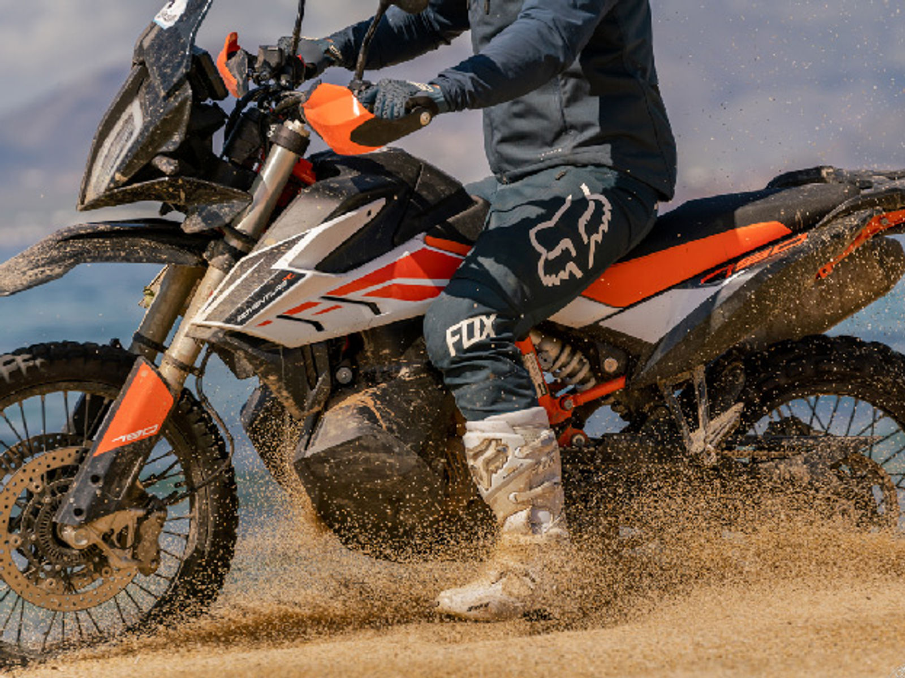
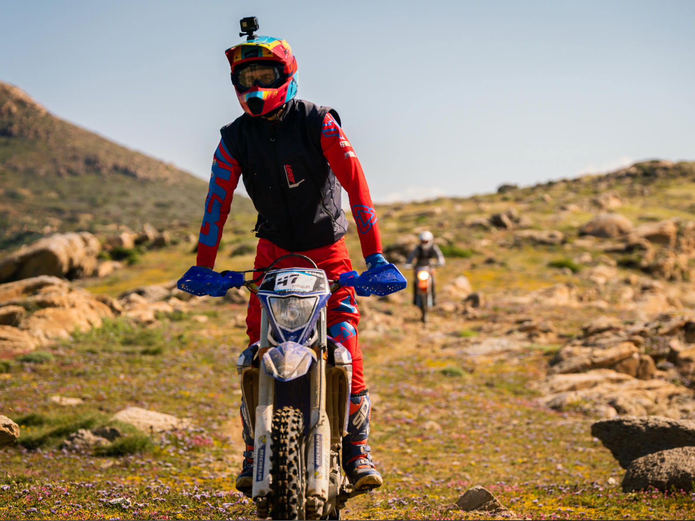
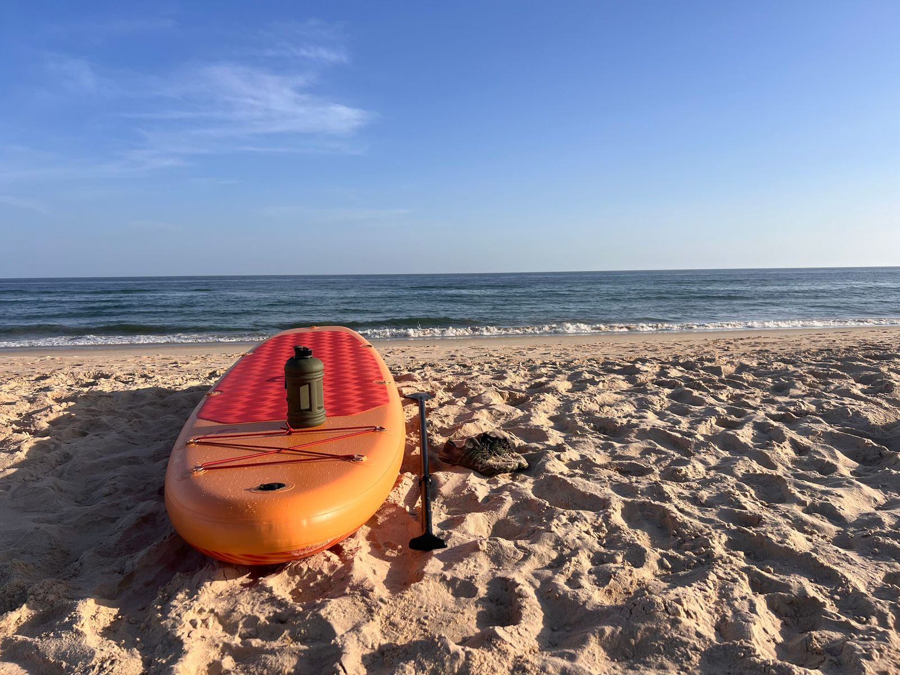
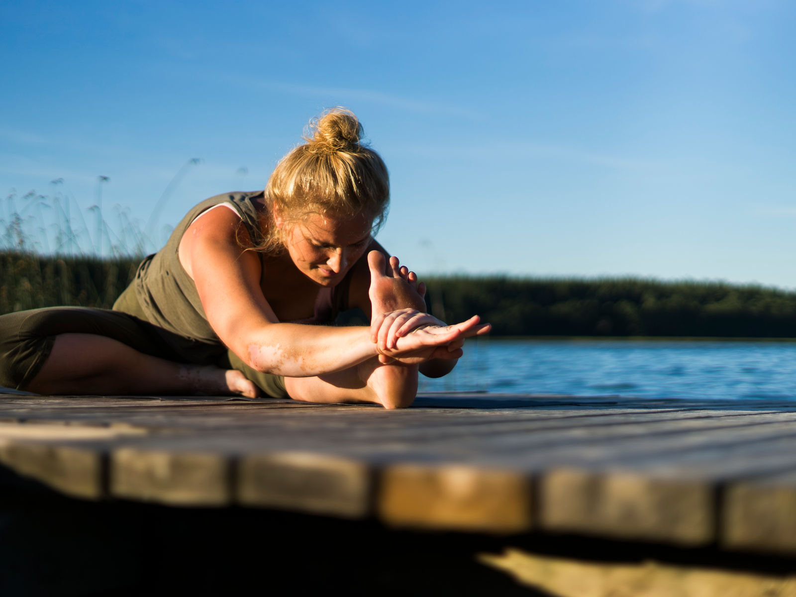
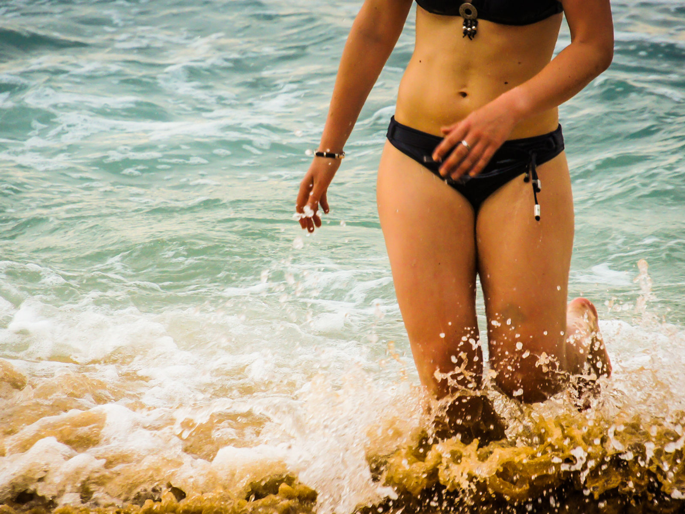
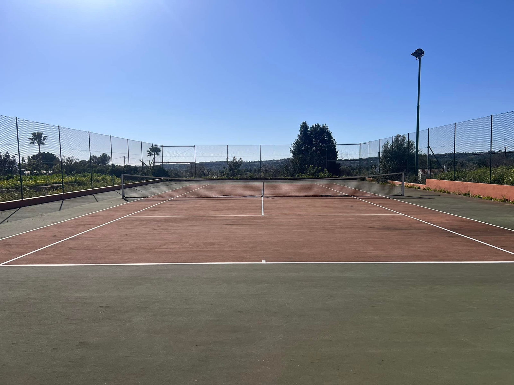

Home/Our Experiences
“Adventure has a way of settling the mind. It’s in our DNA to move, to explore, to be outside. For most of human history, we walked, climbed, carried, and rode.
When we move through nature, our chemistry shifts. The body lets go of tension, the mind slows down — and we rediscover a physical and mental calmness that lifts us.
Adventure is therapy.”
Accommodation

Quiet, comfortable stays between the mountains and the sea. A calm base to rest, recharge, and prepare for the next day’s adventure.
Learn MoreAdventure Motorbiking Tours

Multi-day rides across Portugal, mixing road and off-road routes. Long days, big views, and plenty of distance. A chance to really ride and see the country.
Learn MoreEnduro Motorbiking Tours

1–4 day off-road tours built for proper trail riders. Expect dirt, rocks, and gnarly singletracks — we’re on enduro bikes for a reason.
Learn MoreStandup Paddle-boarding

Paddle on calm lakes, inland reservoirs, the Ria Formosa lagoon, or even out at sea. Half-day or full-day sessions that mix movement and stillness, out in the Algarve sun.
Learn MoreYoga

We host a few guided workshops each year with guest Ashtanga teachers. If you’re a self-practitioner, there’s space to move, breathe, and reconnect on your own. No pressure. Just presence.
Learn MoreHiking

Choose your pace and your path — coastal trails, salt flats, or hill walks through oak trees, rock roses, and wild lavender. Tracks surround us in every direction.
Learn Moree-MTB tours

Trails head out in every direction from here — many barely used, even by locals. With a mountain bike or e-MTB, you can explore deeper, go further, and choose how technical you want to get.
Learn MoreBeach Days

Swim, nap, wander, or just stare at the horizon. With the Algarve’s coast all around us, you’ve got endless beaches to pick from — island shores, quiet coves, or wide open sands.
Learn MoreTennis Sessions

Rally, unwind, or just hit balls into the blue. Surrounded by orange trees and open skies, our private court — complete with a ball machine — is yours for an easy match, solo session, or a calm reset between adventures.
Learn MoreMassage Therapy

A restorative massage tailored to ease tired muscles, release tension, and bring the body back into balance after a day of riding, hiking, or exploring. Calm, private, and carried out at the property — the perfect reset between adventures.
Learn More